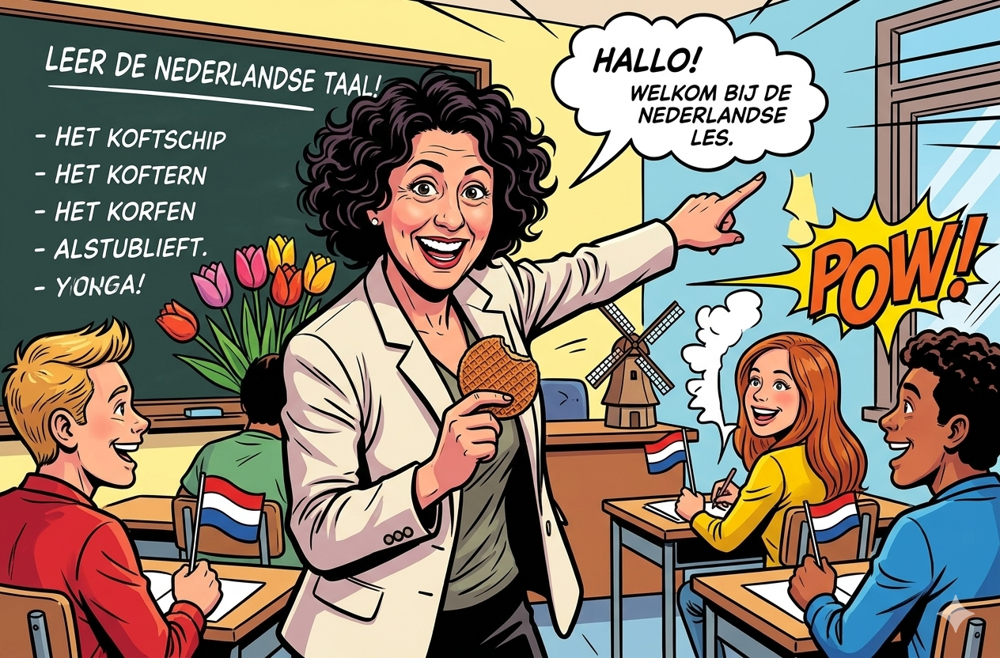

🇳🇱
Dutch Flashcards
Kies een categorie · Choose a category
📖
Zelfstandige naamwoorden
de / het · 500 cards
🔤
Werkwoorden
Perfectum · Imperfectum · 200 verbs

Sandra 2.1
Irregular Verbs
by Fatima Lokhandwala
← Home
📖 Dutch Nouns
All (500)
de-woorden
het-woorden
◀
1 / 500
▶
Go
Find